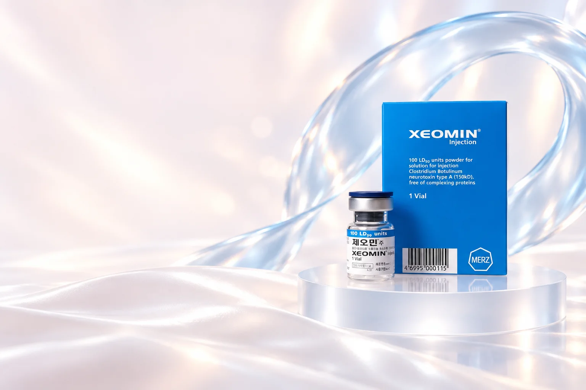
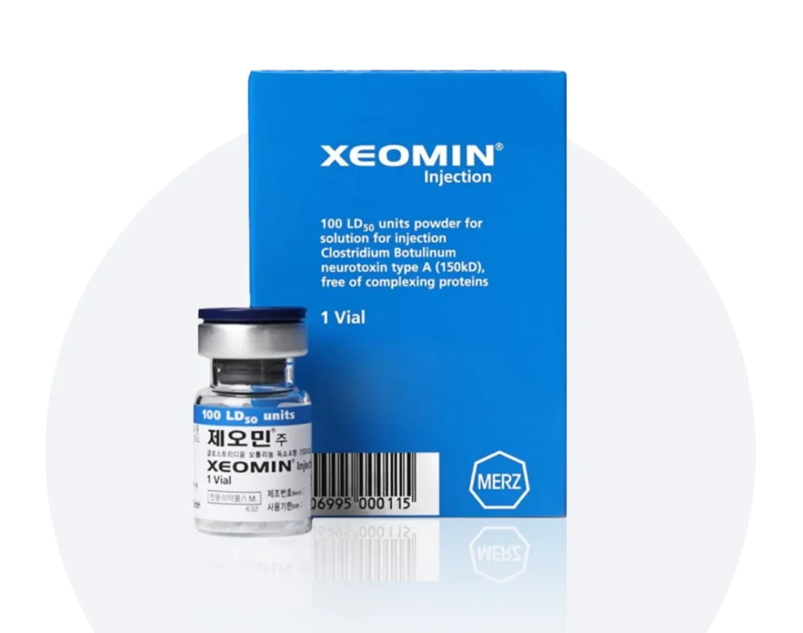
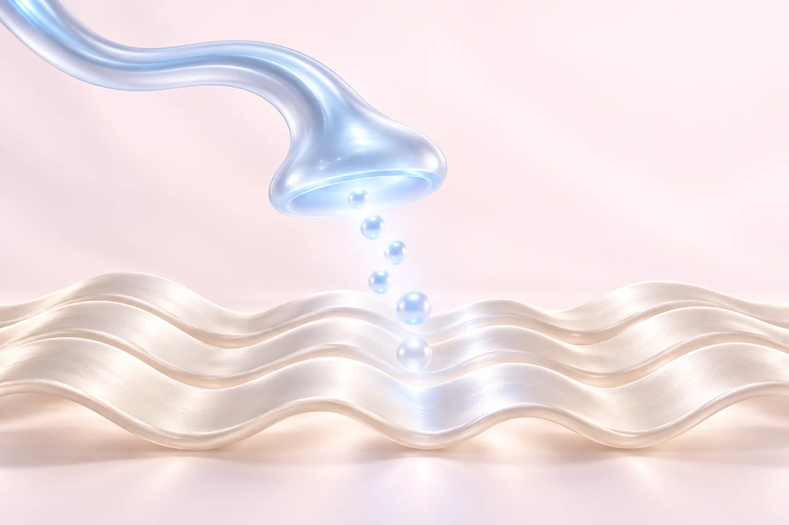
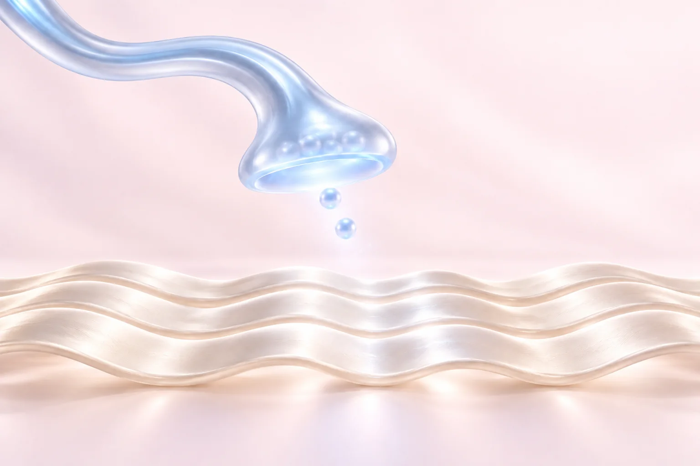
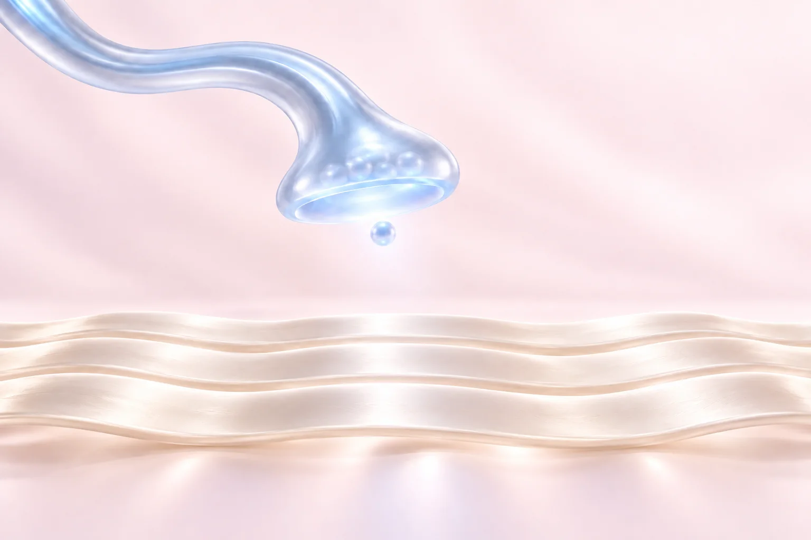
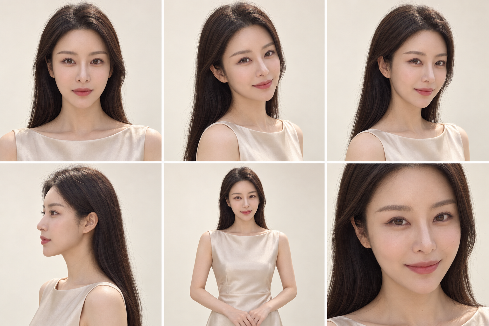

‘복합단백질 제거’는 무슨 뜻인가요?
톡신 주변의 복합단백질을 분리하고 신경독소를 정제한 제형을 뜻합니다. 모든 단백질이나 첨가제가 없다는 의미는 아닙니다. 제품의 전체 성분과 개인의 알레르기 이력을 함께 확인합니다.

Meet Xeomin.
제오민(Xeomin)은 멀츠의 보툴리눔 톡신 A형 제제입니다. 성분명은 인코보툴리눔톡신A(incobotulinumtoxinA)이며, 신경에서 근육으로 전달되는 신호에 작용해 근육 수축을 일시적으로 줄입니다.
우리가 흔히 ‘보톡스’라고 부르는 보툴리눔 톡신 시술에 사용하는 제품 중 하나로, 복합단백질을 제거한 150kDa 신경독소 제제라는 특성이 있습니다.
150kDa와 성분 구성 살펴보기
복합단백질이 제거된
보툴리눔 톡신 A형 제제
톡신 주변의 복합단백질을 분리하고 신경독소를 정제한 제형을 뜻합니다. 모든 단백질이나 첨가제가 없다는 의미는 아닙니다. 제품의 전체 성분과 개인의 알레르기 이력을 함께 확인합니다.
150kDa는 신경독소 분자의 크기입니다. 제품에 표시된 50·100단위는 제품 규격으로, 개인의 시술 용량이나 유지 기간을 뜻하지 않습니다. 제품별 단위도 임의로 환산하지 않습니다.
A quieter signal.
표정을 만드는 것은 근육의 움직임입니다.
그 움직임을 전달하는 신호가 줄어드는 과정을 살펴보세요.



신경에서 보내는 신호신호에 반응하는 근육작용 원리를 단순화한 개념 연출신경 말단은 아세틸콜린이라는 신호 물질을 내보냅니다. 이 신호를 받은 근육이 수축하면서 웃거나 찡그리는 표정이 만들어집니다.
제오민은 신경 말단 안에서 신호 물질의 방출에 관여하는 SNAP-25 단백질에 작용합니다. 그 결과 아세틸콜린의 분비가 억제됩니다.
근육으로 전달되는 신호가 줄면 표정근의 수축이 감소해 움직임과 관련된 주름 개선에 도움을 줍니다. 효과는 영구적이지 않으며 경과는 개인마다 다릅니다.
필러가 볼륨을 보완하는 방식과 달리, 보툴리눔 톡신은 근육으로 가는 신호 전달에 작용합니다.

Your expression.
표정에 따라 달라지는 주름과
부위별 근육의 움직임을 살펴봅니다.
공식 안내의 상부안면주름 적응증: 미간·이마 18–65세, 눈가 18–60세 성인의 중등도~중증 주름. 시술 여부는 부위별 허가사항과 진료 결과에 따라 결정합니다.
Time & expression.
시술 직후의 느낌만으로 결과를 판단하지 않고,
표정의 움직임이 달라지는 과정을 살펴봅니다.
미국 공식 처방정보에 안내된 효과 발현의 중간값 범위입니다. 개인별로 느끼는 변화 시점은 다를 수 있습니다.
같은 자료에서는 통상적인 효과가 12–16주까지 지속될 수 있다고 설명합니다. 모든 부위와 개인에게 같은 기간을 보장하지 않습니다.
근육 상태, 적용 부위, 용량과 이전 반응을 함께 확인합니다. 효과가 남아 있을 때의 추가 시술도 먼저 의료진과 상담합니다.
기간 수치는 미국 제오민 처방정보 2.9의 참고치입니다. 국내 허가 범위 및 개인별 시술 계획은 진료에서 확인합니다.
Beyond the formula.
‘복합단백질이 없다’는 제품 특성과 ‘내성이 생기지 않는다’는 말은 다릅니다. 무복합단백질 제형이어도 항체 형성 가능성이 없다고 단정할 수 없습니다.
내성은 효과를 약화시킬 수 있는 중화항체와 관련해 이야기하지만, 효과가 이전과 다르다고 모두 항체 때문인 것은 아닙니다. 근육 상태, 용량, 시술 부위와 간격도 함께 살펴야 합니다.
이전에 맞은 제품명과 시술 날짜, 반응을 알려주세요. 제품만 바꾸거나 추가 시술을 결정하기 전에 원인을 확인하는 과정이 필요합니다.
Made for you.
관심 부위와 표정의 움직임, 현재 근육 상태를 함께 살핍니다.
받았던 제품과 시술 시점, 당시 반응을 바탕으로 상담합니다.
진료 결과에 따라 시술 가능 여부와 적정 용량, 경과 확인 방법을 안내합니다.
최근 보툴리눔 톡신 시술, 복용 약, 알레르기와 신경근 질환 이력을 알려주세요. 임신·수유 여부, 시술 부위의 염증도 확인합니다.
주사 부위의 멍·부기·통증이나 두통, 눈꺼풀 처짐 등이 나타날 수 있습니다. 시술 부위를 강하게 문지르지 말고 원내 관리 안내를 따라주세요.
예상과 다른 변화나 지속되는 불편감은 병원에 문의하세요. 호흡·삼킴의 어려움 등 심한 증상은 즉시 의료 도움을 받으세요.
A little
more about
Xeomin.
제오민은 보툴리눔 톡신 A형 제품 중 하나이며 성분명은 인코보툴리눔톡신A입니다. 일상적으로 부르는 보톡스 시술에 쓰이는 제품으로, 복합단백질을 제거한 제형이라는 특성이 있습니다. 제품별 단위를 임의로 환산하거나 효과의 우열을 단정하지 않습니다.
150kDa는 신경독소 분자의 크기를 나타냅니다. 무복합단백질은 톡신 주변의 복합단백질을 분리했다는 뜻이며, 모든 단백질이나 첨가제가 없다는 의미는 아닙니다. 제품의 성분과 알레르기 이력을 함께 확인합니다.
국내 공식 안내상 미간·이마는 18–65세, 눈가는 18–60세 성인의 중등도~중증 상부안면주름의 일시적 개선에 사용합니다. 실제 시술 여부는 부위별 근육 움직임과 허가사항을 확인한 뒤 결정합니다.
미국 공식 처방정보에서는 효과 발현의 중간값을 2–7일, 통상적인 효과 지속을 12–16주까지로 안내합니다. 해외 자료의 참고치로, 적용 부위·용량·근육 상태와 개인 반응에 따라 달라지며 같은 기간을 보장하지 않습니다.
복합단백질을 제거한 제형이어도 내성 가능성이 없다고 단정할 수 없습니다. 이전 제품과 용량, 시술 간격, 반응을 함께 살피며 효과가 달라진 원인이 중화항체인지 다른 요인인지 진료에서 확인합니다.
제품 구성과 허가사항, 이전 시술 이력, 원하는 변화와 현재 근육 상태를 함께 확인합니다. 제품 이름이나 용량 숫자만으로 정하기보다 진료에서 적합한 계획을 상담합니다.
사각턱은 미간·눈가·이마의 표정주름과 다른 근육과 목적을 확인하는 부위입니다. 모든 부위를 동일한 허가 범위로 안내하지 않으며, 제품의 허가사항과 개인 상태를 확인해 상담합니다.
시술 부위와 범위, 개인별 필요 용량, 다른 시술의 병행 여부에 따라 달라질 수 있습니다. 상담에서 계획과 비용을 안내하며, 현재 진행 중인 혜택은 이달의 이벤트에서 확인할 수 있습니다.
임신·수유 여부, 신경근 질환과 알레르기 이력, 복용 약, 시술 부위의 염증, 최근 받은 보툴리눔 톡신 제품과 날짜를 알려주세요. 진료에서 시술 적합성을 확인합니다.
시술 부위를 강하게 누르거나 문지르지 말고 원내 관리 안내를 따라주세요. 멍·부기·통증, 두통이나 눈꺼풀 처짐 등이 나타날 수 있습니다. 지속되는 불편감은 병원에 문의하고, 호흡·삼킴의 어려움 등 심한 증상은 즉시 의료 도움을 받으세요.
뷰티블라썸의원 카카오톡 또는 전화로 상담할 수 있습니다. 합정역 3번 출구 앞에 있으며, 관심 부위와 이전에 받은 보툴리눔 톡신 제품·시술 날짜를 함께 알려주세요.
나에게 맞는 이벤트를 펼쳐보세요.

Find your balance.
홍대·합정 뷰티블라썸의원
관심 부위와 이전 시술 이력을 함께 알려주세요.
멀츠 에스테틱스 코리아 제오민 공식 제품 정보 · 국내 제품·사용 목적·부위별 연령
DailyMed 제오민 미국 공식 처방정보 · 성분·작용 원리·효과 경과·주의사항. 해외 적응증을 국내 허가 범위로 동일하게 적용하지 않습니다.